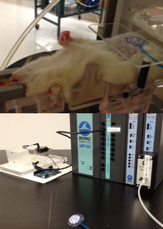
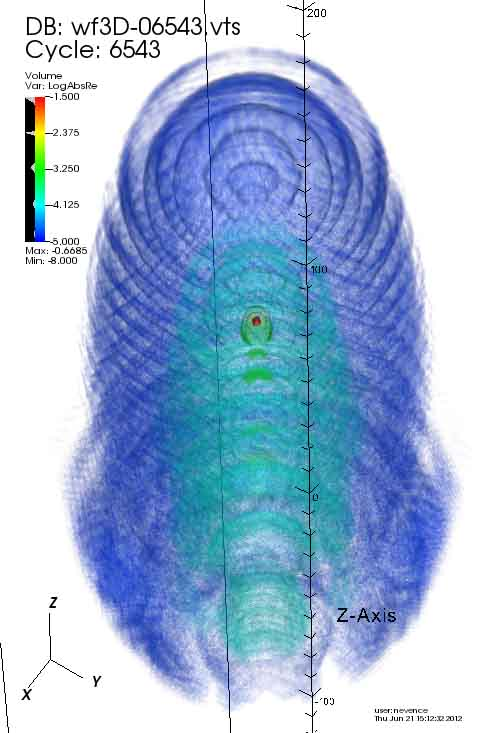

Research
This page highlights the technology of my academic projects. For an easy-to-follow introduction to the science, follow the links.
Radiosurgery
This reserach project used a rat model to quantify radiation deposition in a living subject.
Created a robotic rat-phantom for proton-beam target practice using Arduino-control servo motors modeling respiration and heartbeat.
Created an Arduino-controlled, mechanical-video interface to communicate rat breathing to gate CT-scanner.
Created proton gantry alignment procedure using alignment-phantom, proton-sensitive film, Matlab image processing algorithm, and linear transformation to determine and correct for systematic proton-beam error.
Proton Computed Tomography
Proton Computed Tomography uses protons to create 3-dimensional images; this will be especially useful for doctors planning proton radiation treatment for patients with head and neck tumors.
Nuclear Instrumentation Modules (NIM) [LINK ME] and an oscilloscope were indespensible in setting up the proton beam.
Used Arduino-based robotics to automate repetative and radiation-intensive tasks. Created a sub-millimeter precision positioning system (for precision radiation delivery) with a collection of Newport stages controlled with python driver.
Callibrated the five-stage, scintillating proton energy detector using [LINK ME] ROOT, a C++ framework developed at CERN.
Cell-phase predictor

My first post-doc fellowship was classifying the phase of stem cells in small worms using supervised machine learning. I improved the accuracy of our support vector machine from 85% to 90%.
Concave slope

Used Mathematica to solve a 1D boundary value problem and demonstrate the validity of an integral approximation of the soil stability equation.
MADNESS

MADNESS (Multiresolution ADaptive Numerical Environment for Scientific Simulation) [LINK] is a C++ framework that aggregates distributed computing technologies (OpenMP, MPI, Futures, Global Arrays, etc.) giving scientists an interface to leverage High Performance Computing (HPC).
MADNESS hides most of the HPC details from the programmer. For example, MADNESS' function-objects are independent of the number of processors. MADNESS is built on OpenMP for shared memory computers and MPI for distributed memory computers. Interprocessor communication is one bottleneck that affects performance non-linearly when scaling up to thousands of cores. MADNESS mitigates this bottleneck by reducing work to self-contained future-wrapped packets, pushing them to a task queue, and randomly assigning the packets to the available cores to distribute the workload.
Laser-atom interaction
In graduate school I studied laser-atom interactions using the high performance computing resources at Oak Ridge National Laboratory. MADNESS, our C++ framework, used a LINK futures-based task queue that used both MPI and OpenMP to maximize the performance on large distributed-memory architectures.
Department of Energy (DOE) funding prioritized an interest in how REWRITE our performance scaled as we increased the number of cores (processors).
On the applications side, we used an integral solution to the time-dependent Schrodinger wave equation. While we relied on the GNU Scientiific Library and Intel math kernel library (MKL) for mathematical support, one particularly exotic special function required an alternating series approximation. Since subtraction of similar-sized terms is notorious for accumulating numerical error, we created a custom 128-bit precision floating point implementation.
Once we built the computation engine, we were able to run our experiment on the Cray supercomputers. This generated lots of data, which we processed using python to parse the file extracting the data, and auto-generating LaTeX code for quick reporting.